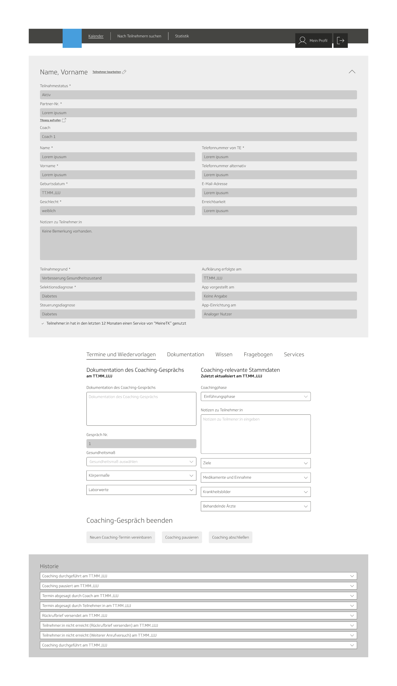
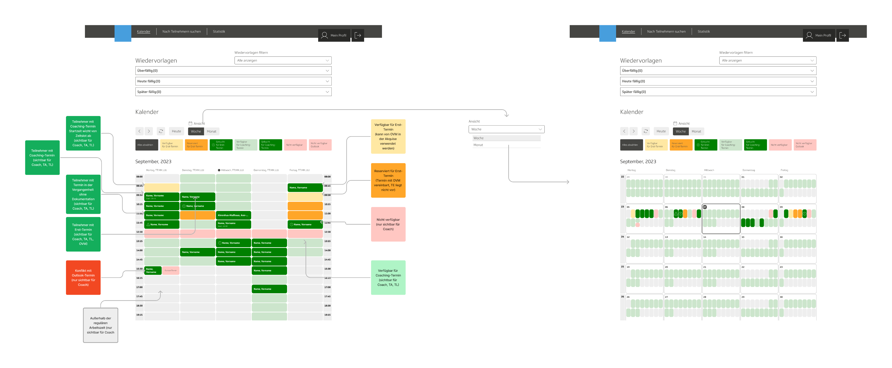
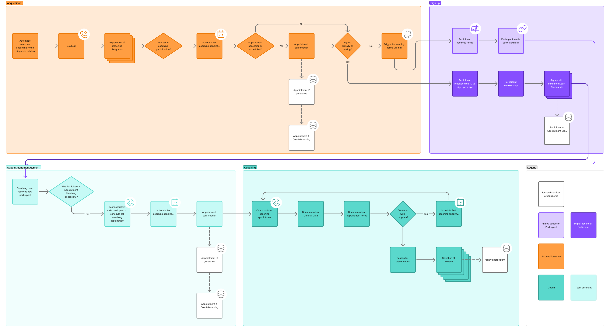

Efficiency by Design
How I Simplified Health Coaching Workflows
Results
- Delivered an integrated back-office system that combined appointment management and documentation in one intuitive interface.
- Introduced role-based calendar views for team assistants, coaches, and team leads, improving visibility and efficiency.
- Enabled real-time documentation by displaying all relevant information in one view — no need for external tools like Word.
- Simplified complex workflows through the decision-tree logic, increasing usability and reducing navigation effort.
- The system became a key operational tool for the coaching program, improving both efficiency and data quality.


Situation
Client: Germany’s largest health insurance
The client offered telephone health coaching for members with chronic conditions such as diabetes and coronary heart disease. Coaches used separate tools for appointment management and session documentation, creating inefficiencies and workarounds. The client’s goal was to integrate these systems into one back-office solution tailored to coaches’ real workflows.
Task
Position: Lead UX Designer
Focus: User Research, Information Architecture, Prototyping
Design an intuitive back-office system that allows coaches to manage and document sessions efficiently, keeping all relevant information visible at a glance. The tool needed to handle different user roles, provide flexible scheduling options, and simplify data entry, especially during live coaching calls.
Actions
- Analyzed existing tools and clustered their content to understand overlaps, redundancies, and missing connections.
- Conducted focus group interviews with coaches to observe how they actually worked with the tools. A key insight: many coaches preferred using Word during sessions and later transferred notes into the system because relevant fields were spread across multiple pages.
- Created user journeys to map real workflows and identify pain points, which became the foundation for new process flows.
- Translated these journeys into user flows, enabling a clear visualization of steps and required functions.
- Designed wireframes and interactive prototypes in Figma, tested them with coaches, and refined the designs iteratively based on feedback.
- Developed a decision-tree structure to manage multiple scenarios and role-specific workflows, ensuring coaches could see all options at a glance.
- Documented the final concept, including all use cases and states, in Confluence for client approval and as a blueprint for developer implementation.

Key learnings
- Users don’t always use tools as intended — alternative usage often reveals valuable insights for improvement.
- Understanding real workflows through observation and open dialogue is crucial to designing solutions that fit users’ needs.